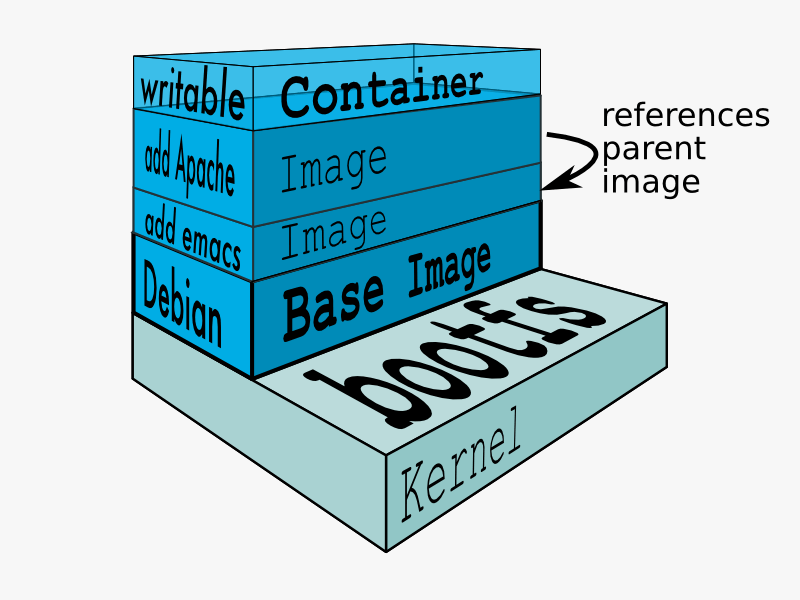

Docker Container
Slide made by Cristian Pavan @tux_eithel
What is Docker?
Docker is a virtualization software
It uses features provided by Linux kernel, likes cgroups and Namespaces, to isolate Applications
Faster delivery of your applications
Ok but... it's like a Virtual Machine!
Why Docker?
Virtual machines suck?
a bit
- CPU and RAM hungry
- Not really maintenable
- Slow down your workflow
$ docker run --rm -v "$(pwd)":/pippo debian:jessie ls /etc/hostsWe tell docker to do:
-
Launch a command inside the container
ls /etc/hosts -
Use a specific ubuntu version (if not locally present, it'll be downloaded)
debian:jessie -
Share current folder, and mount the folder inside the container (RW) at path /pippo
-v "$(pwd)":/pippo -
After command executing, delete the container
--rm - Last command... run this thing!
More options, more fun!
docker run -t -i ubuntu:14.04 /bin/bash- -t : pseudo-tty or terminal inside container
- -i : use STDIN for inteact with container
docker run -d -P --name web training/webapp python app.py- -d : run the container in the background
- -P : map network ports inside our container to our host
- or -p 5000:5000 : map port 5000 inside our container to port 5000 on our local host
- --name web : set container name
Under the Hood
Docker is made of:
- Layers : read-only or read-write file system
- Images : read-only Layer. An image can be a result of multiple (read-only) layers stacked on top of each other
- Containers : process launched inside a read-write layer on top of all read-only layer
Container over Debian Image

Container stacked layer
Cool stuff: Linking container
$ docker run -d --name db training/postgres
$ docker run -d -P --name web --link db:db training/webapp python app.py
# option --link name:alias
"db" container exposes port 5432 which is automatically connected to "web" container
Docker exposes connectivity information for the source to the recipient using :
- Environment variables
- Updating the /etc/hosts file
You can use these variables inside your applications
Cool stuff: Data Volumes
Useful to persist or share data
$ docker run -ti --name keep_data -v /pippo busybox
# create a new volume inside container
$ docker run -ti --name keep_data -v /src/webapp:/pippo:ro busybox
# mount /src/webapp inside a container but read-only
Share Data Volumes
$ docker run -ti --name db_vol -v /var/lib/mysql busybox
# create a new volume inside container
$ docker run -d --volumes-from db_vol --name mysql_1 -p 3306:3306 tutum/mysql
# mount var/lib/mysql inside container mysql_1
DockerFile: make images portable
You can define a Dockerfile where inside there are all the commands you need to create an image
In Dockerfile you can:
- define your base image
- set environment variables
- run command for install/edit image configuration
- add file from host to image
- set volumes
- expose application ports
Create the image with command
$ docker build -t="myuser/myapp:v1" .
# inside the directory where there is Dockerfile
An Example
# random instructions!!
FROM ubuntu:trusty
MAINTAINER Cris
# Install packages
ENV DEBIAN_FRONTEND noninteractive
RUN apt-get update && \
apt-get -yq install mysql-server-5.6 pwgen && \
rm -rf /var/lib/apt/lists/*
# Install other packages
ENV VERSION 4.7.2
ENV APP app-$VERSION
RUN curl --retry 3 http://example.com/$VERSION/$APP.tgz > /opt/$APP.tgz
RUN tar -C /opt --extract --file /opt/$APP.tgz
RUN mv /opt/$APP /opt/my_app
# Add scripts
ADD run.sh /run.sh
RUN chmod 755 /*.sh
# Add VOLUMEs to allow backup of config and databases
VOLUME ["/etc/mysql", "/var/lib/mysql"]
# Add a user
RUN useradd --home-dir /opt/my_app --comment "my_app Server" custom_user
RUN chown -R custom_user:custom_user /opt/my_app/example
# user when container is up
USER custom_user
EXPOSE 3306
CMD ["/run.sh"]
#WORKDIR /opt/my_app
#CMD ["java", "-jar", "start.jar"]
Docker Hub
Docker Hub is a remote repository
where you can find (public) images and you can commit your images in order to share with another user!
You can create and share images privately with your organization
Docker Compose
Docker Compose let you to define all the containers
for your application in one file (docker-compose.yml)
version: '2'
services:
dbVolM:
image: busybox
volumes:
- /var/lib/mysql
mysql:
build: ./docker/mysql
volumes_from:
- dbVolM
ports:
- "3306:3306"
dbP:
image: postgres
volumes:
- dataPg:/var/lib/postgres/
phpapache:
build: ./docker/apache_php
image: apache_prod:1.0
volumes:
- .:/app
ports:
- "8080:80"
links:
- mysql:mysql
- dbP:postgres
volumes:
dataPg:
external: true
Inside the directory run
$ docker-compose up
# build, (re)create, start and attach to containers for a service.
Docker Machine
Machine lets you create Docker hosts on your computer, on cloud providers, and inside your own data center. It creates servers, installs Docker on them, then configures the Docker client to talk to them.
Supported Drivers
Amazon Web Services, Microsoft Azure, Digital Ocean, Exoscale, Google Compute Engine, Generic, Microsoft Hyper-V, OpenStack, Rackspace, IBM Softlayer, Oracle VirtualBox, VMware vCloud Air, VMware Fusion, VMware vSphere
$ docker-machine create --driver digitalocean --digitalocean-access-token=access_token_from_do NOME
Docker Swarm
Docker Swarm is native clustering for Docker. It turns a pool of Docker hosts into a single, virtual host.

- clustering: discover nodes
- constraint filter
- affinity filter
- port filter
- spread strategy
It's time to test!
Test docker in your workflow